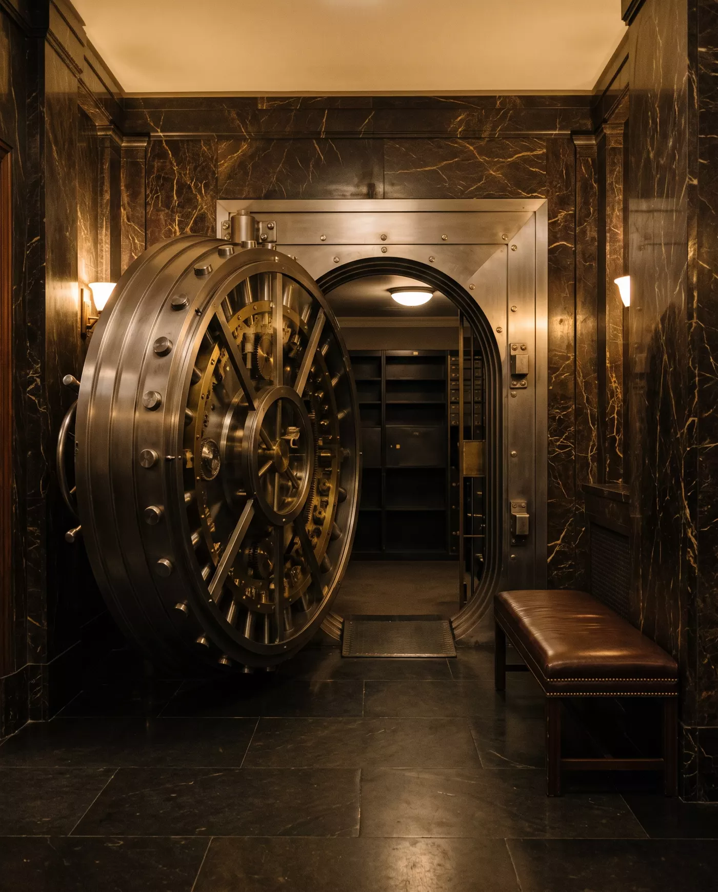

eintrag nº 01
Diskretion
Was uns anvertraut wird, verlässt dieses Haus nicht. Keine Namen, keine Listen, keine Ausnahmen — auch nicht nach hundert Jahren.
0jahre ohne eine indiskretion
privatbank · zürich · anno mdccclxxxvii
Vermögen, das bleibt.
Eine unabhängige Schweizer Privatbank in vierter Generation. Wir verwalten kein Geld — wir bewahren, was Familien über Jahrzehnte aufgebaut haben.
die prinzipien
Sie stehen auf der ersten Seite unseres ersten Hauptbuchs. Sie stehen in jedem Mandatsvertrag. Sie stehen nicht zur Diskussion.
eintrag nº 01
Was uns anvertraut wird, verlässt dieses Haus nicht. Keine Namen, keine Listen, keine Ausnahmen — auch nicht nach hundert Jahren.
eintrag nº 02
Wir spekulieren nicht. Wir halten Qualität — und halten sie lange. Rendite ist die Folge von Geduld, nicht ihr Ersatz.
eintrag nº 03
Unsere Partner haften mit ihrem persönlichen Vermögen. Wer so entscheidet, entscheidet anders — vorsichtiger, länger, ehrlicher.
der tresor
Vier Meter unter der Talstrasse liegt der Raum, in dem wir aufbewahren, was sich nicht beziffern lässt: Urkunden, Briefe, Testamente — die Papiere ganzer Familiengeschichten. Scrollen Sie. Die Tür öffnet sich nur langsam. Absichtlich.

hauptsitz zürich · untergeschoss ii Granit aus dem Gotthard, Messing von 1912. Die Tür wiegt elf Tonnen und hat sich noch nie geirrt.
ein jahrhundert
Eine einzige Zahl, hundert Jahre lang sich selbst überlassen. Keine Prognose — eine Erinnerung daran, warum wir langsam arbeiten.
Angenommen: 5.2 % p. a., Erträge reinvestiert, ein Jahrhundert Geduld. Vergangenheit garantiert nichts — sie erzieht nur.
das mandat
Ein Mandat bei AURUM beginnt nicht mit Formularen, sondern mit einem Gespräch — bei uns an der Talstrasse, unter vier Augen. Es endet, wenn Sie es beenden. Sonst nie.
Wir führen Vermögen ab fünf Millionen Franken — Familien, Stiftungen, Unternehmer nach dem Verkauf ihres Lebenswerks. Jedes Mandat wird von einem Partner persönlich geführt, nicht von einer Abteilung. Sie erhalten keine Hochglanzberichte, sondern ein Hauptbuch: jede Position, jede Gebühr, jede Entscheidung — begründet, datiert, signiert.
ein gespräch erbitten